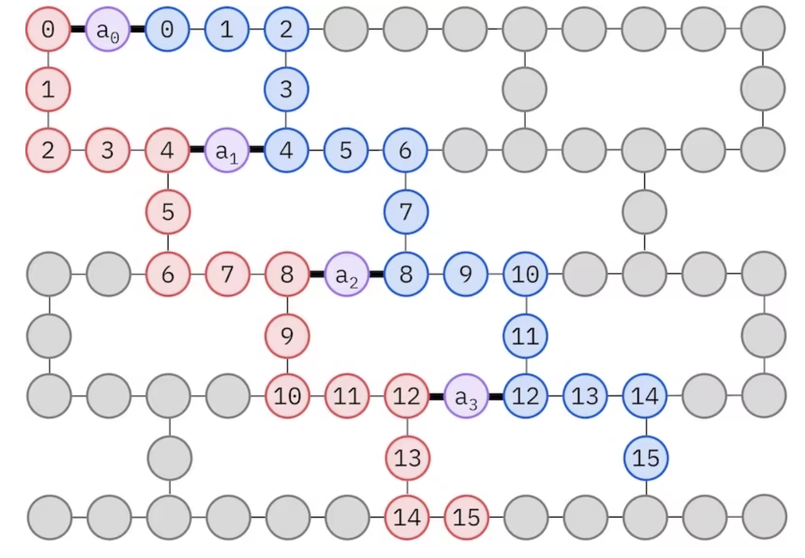

import pyscf
import pyscf.cc
import pyscf.mcscf
import ffsim
import numpy as np
import matplotlib.pyplot as plt
from qiskit import QuantumCircuit, QuantumRegister
from qiskit.transpiler.preset_passmanagers import generate_preset_pass_manager
from qiskit_ibm_runtime import QiskitRuntimeService
from qiskit_ibm_runtime import SamplerV2 as SamplerChemistry

# Specify molecule properties
open_shell = False
spin_sq = 0
# Build N2 molecule
mol = pyscf.gto.Mole()
mol.build(
atom=[["N", (0, 0, 0)], ["N", (1.0, 0, 0)]],
basis="cc-pvdz",
symmetry="Dooh",
)
# Define active space
n_frozen = 2
active_space = range(n_frozen, mol.nao_nr())
# Get molecular integrals
scf = pyscf.scf.RHF(mol).run()
num_orbitals = len(active_space)
n_electrons = int(sum(scf.mo_occ[active_space]))
num_elec_a = (n_electrons + mol.spin) // 2
num_elec_b = (n_electrons - mol.spin) // 2
cas = pyscf.mcscf.CASCI(scf, num_orbitals, (num_elec_a, num_elec_b))
mo = cas.sort_mo(active_space, base=0)
hcore, nuclear_repulsion_energy = cas.get_h1cas(mo)
eri = pyscf.ao2mo.restore(1, cas.get_h2cas(mo), num_orbitals)
# Store reference energy from SCI calculation performed separately
exact_energy = -109.22690201485733converged SCF energy = -108.929838385609# Get CCSD t2 amplitudes for initializing the ansatz
ccsd = pyscf.cc.CCSD(
scf, frozen=[i for i in range(mol.nao_nr()) if i not in active_space]
).run()
t1 = ccsd.t1
t2 = ccsd.t2E(CCSD) = -109.2177884185544 E_corr = -0.2879500329450041n_reps = 1
alpha_alpha_indices = [(p, p + 1) for p in range(num_orbitals - 1)]
alpha_beta_indices = [(p, p) for p in range(0, num_orbitals, 4)]
ucj_op = ffsim.UCJOpSpinBalanced.from_t_amplitudes(
t2=t2,
t1=t1,
n_reps=n_reps,
interaction_pairs=(alpha_alpha_indices, alpha_beta_indices),
)
nelec = (num_elec_a, num_elec_b)
# create an empty quantum circuit
qubits = QuantumRegister(2 * num_orbitals, name="q")
circuit = QuantumCircuit(qubits)
# prepare Hartree-Fock state as the reference state and append it to the quantum circuit
circuit.append(ffsim.qiskit.PrepareHartreeFockJW(num_orbitals, nelec), qubits)
# apply the UCJ operator to the reference state
circuit.append(ffsim.qiskit.UCJOpSpinBalancedJW(ucj_op), qubits)
circuit.measure_all()circuit.decompose(reps=3).draw()#TODO support more customized gates such like sdg, s, square root xCannot execute code, session has been disposed. Please try restarting the Kernel.
Failed to connect to the remote Jupyter Server 'http://127.0.0.1:9800/'. Verify the server is running and reachable.
Cannot execute code, session has been disposed. Please try restarting the Kernel. View Jupyter <a href='command:jupyter.viewOutput'>log</a> for further details.